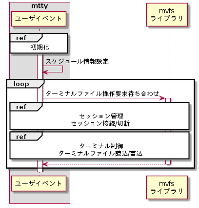

概要
ユーザイベントモジュールは、ttyファイルを作成しttyファイルへの操作要求を待ち受け、要求受付時は対応する処理を起動する。
初期化 - スレッド作成
初めに、ttyファイル制御用スレッドのスタック領域をC標準ライブラリのmalloc()を用いて割当て、memset()を用いて初期化する。
スタック領域の割当て
| 関数 | malloc() | ||
| 引数 | # | 設定値 | 説明 |
| 1 | 8,192 | スタックサイズ | |
スタック領域の初期化
| 関数 | memset() | ||
| 引数 | # | 設定値 | 説明 |
| 1 | (変数ポインタ) | スタック領域(malloc()の戻り値) | |
| 2 | 0 | 初期化値 | |
| 3 | 8,192 | スタックサイズ | |
次に、kernelライブラリのLibMkThreadCreate()を用いて、ttyファイル制御用のスレッドを作成する。
スレッド作成
| 関数 | LibMkThreadCread() | ||
| 引数 | # | 設定値 | 説明 |
| 1 | (関数ポインタ) | スレッドエントリ関数 | |
| 2 | NULL | スレッドエントリ関数パラメータ(未使用) | |
| 3 | (スタック) | スタック領域(malloc()の戻り値) | |
| 4 | 8,192 | スタックサイズ | |
| 5 | (変数ポインタ) | タスクID | |
| 6 | (変数ポインタ) | エラー要因 | |
機能 - 初期化 - ttyファイル作成
mttyライブラリのLibMvfsMount()を用いてttyファイルを作成する。
ttyS1ファイル作成
| 関数 | LibMvfsMount() | ||
| 引数 | # | 設定値 | 説明 |
| 1 | "/ttyS1" | ttyS1ファイルパス | |
| 2 | (変数ポインタ) | エラー要因 | |
ttyS2ファイル作成
| 関数 | LibMvfsMount() | ||
| 引数 | # | 設定値 | 説明 |
| 1 | "/ttyS2" | ttyS2ファイルパス | |
| 2 | (変数ポインタ) | エラー要因 | |
機能 - スケジューリング
初期化を行った後にスケジューリングする。
シーケンスを下記に示す。

スケジューリングは、mvfsライブラリのLibMvfsSchedStart()を用いる。
LibMvfsSchedStart()はttyファイルに対するユーザプロセスからの要求を待ち合わせ、要求を受け付けた時は事前に登録された関数をコールバックする。
関数の登録は、関数ポインタを設定したスケジュール情報を引数で渡す事で行う。
スケジュール情報
| 設定 | 設定値 | 概要 |
| callBack.pVfsOpen | &SessDoVfsOpen | ttyファイルがopenされた時にコールバックされる。 |
| callBack.pVfsWrite | &TtyDoVfsWrite | ttyファイルがwriteされた時にコールバックされる。 |
| callBack.pVfsRead | &TtyDoVfsRead | ttyファイルがreadされた時にコールバックされる。 |
| callBack.pVfsClose | &SessDoVfsClose | ttyファイルがcloseされた時にコールバックされる。 |
| callBack.pOther | NULL | 仮想ファイルシステムに無関係なメッセージを受信した時にコールバックされる。現状は指定しない。 |
スケジュール開始
| 関数 | LibMvfsSchedStart() | ||
| 引数 | # | 設定値 | 説明 |
| 1 | (変数ポインタ) | スケジュール情報 | |
| 2 | (変数ポインタ) | エラー要因 | |
グローバル関数 - UevtInit()
| 関数 | UevtInit() |
| 概要 | 初期化 |
| 説明 | tty制御スレッドを作成する。 |
| 宣言 |
#include <Uevt.h>
|